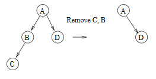

There are a lot of writing questions in Chapter 4. Some questions offer great insights on the general techniques in solving algorithmatic proving questions. So, I decide to record them in this single post. Of course, this post will be continually updated as I work through the chapter.
Insights
- Recursive tree definition is a natural fit with induction (i.e., MAW 4.5, 4.6, 4.7).
- Usually there are two ways to prove a problem in tree, one direction is from induction and the other one is from basic tree property (i.e., MAW 4.4, 4.6).
- Combinatorics (relating to binomials) and Probability theory (discrete part) are important to look at (i.e., MAW 4.14)
- We can usually study some specific examples, and try to generalize them to form induction proof. In addition, always remember we want to convert the problem for \(n+1\) into the same problem but with the inductive step on \(n\). (MAW 4.17)
Solutions
including: MAW 4.4, 4.5, 4.6, 4.7, 4.14, 4.15, 4.16, 4.17, 4.23, 4.24, 4.25, 4.26.a, 4.43
MAW 4.4
Show that in a binary tree of \(N\) nodes, there are \(N + 1\)
NULLpointers representing children.
Proof: For a binary tree with \(N\) nodes, there are two types of edges (pointers):
- edges that are doesn't exist (
NULLpointers). - edges that exist to connect nodes (not
NULLpointers).
Let's first calculate the number of pointers in total, regardless whether the pointer
is NULL or not. Since each node has \(2\) outgoing pointers,
there are \(2N\) pointers in total. Next, we need to calculate the number of edges that actuall
exist. Since each edge connects some node to its parent, and every node except
the root has one parent. In other words, each node, except the root node, has one incoming
pointer from its parent. So, we have \(N-1\) edges existing. Thus the remaining
\(2N - (N-1) = N+1\) edges are actually non-existing. Thus, we have \(N+1\) NULL pointers.
MAW 4.5
Show that the maximum number of nodes in a binary tree of height \(H\) is \(2^{H+1}-1\).
Proof: Let's prove this by induction.
Base case: \(H = 0\). A binary tree of height \(0\) has only one node, root. \(2^{H+1}-1\) equals one for \(H = 0\). Therefore ture for \(H = 0\).
Inductive Hypothesis: Assume that the maximum number of nodes in a binary tree of height \(H\) is \(2^{H+1}-1\) for \(H = 1, 2, ..., k\). Consider a tree \(T\) of height \(k+1\). The root of \(T\) has a left subtree and a right subtree each of which has height at most \(k\). These can have at most \(2^{k+1}-1\) nodes each by the inductive hypothesis. Adding the root node gives the maximum number of nodes in a binary tree of height \(k+1\),
Remarks:
The maximum condition achieves when we have perfect binary tree.
MAW 4.6
A full node is a node with two children. Prove that the number of full nodes plus one is equal to the number of leaves in a nonempty binary tree.
Let's use two methods to prove this question.
Method 1:
Proof: Let's use the following notation for our proof:
Then, we have \(N = F + H + L \label{eq:1}\). We can get another equation based on the number of edges: \(N - 1 = 2F + H \label{eq:2}\). \(N-1\) is the number of edges for a \(N\) node binary tree and \(2F + H\) is another way to calculate the number of edges. Now based on these two euqations we have:
Method 2:
Proof: Let's prove by induction. If there are \(N\) full nodes in a non-empty binary tree then there are \(N+1\) leaves.
Base case: \(N = 0\) This is ture because the tree has one node and the root is a leaf.
Inductive hypothesis: Suppose the theorem holds for \(N = 1, 2, ..., k\). Then we want to show that if there are \(k+1\) full nodes in a non-empty binary tree then there are \(k+2\) leaves. Pick a leaf node and keep removing its parent recursively (i.e., remove its parent and then parent's parent and so on) until a full node is reached. That is, you are traversing from a leaf along the path towards the root, while removing the nodes along the path before a full node is reached. This full node becomes a non-full node because one of its child node is removed. At this point the tree will have one less leaf and one less full node.

Therefore, the tree has \(k\) full nodes after the nodes are removed. By the inductive hypothesis there are \(k+1\) leaves. Add all the nodes that were removed back into the tree the same way to create the original tree. We are adding one full node and one leaf node. Therefore, we have \(k+1\) full nodes with \(k+2\) leaves.
MAW 4.7
Suppose a binary tree has leaves \(l_{1}, l_{2}, ..., l_{M}\) at depths \(d_{1}, d_{2}, ...,d_{M}\), repectively. Prove that \(\sum_{i=1}^M 2^{-d_{i}} \leq 1\) and determine when the quality is true.
Proof: Let's prove this by induction.
Base case: when \(M = 1\), there is one node: the root is a leaf wit depth zero. Then the sum is one, and claim holds.
Inductive hypothesis: Suppose the theorem is true for all trees with at most \(k\) nodes. Consider any tree with \(k+1\) nodes. Such a tree consists of an \(i\) node left subtree and a \(k-i\) node right subtree. By the inductive hypothesis, the sum for the left subtree leaves is at most one with respect to the left tree root. Because all leaves are one deeper with respect to the original tree than with respect to the subtree, the sum is at most \(1/2\) with respect to the root. Similar logic implies that the sum for leaves in the right subtree is at most \(1/2\) proving the theorem.
The equality is true if and only if every internal node is a full node. In other words, no nodes have one child. Suppose there is a node with one child, and the equality still holds. Each time we remove two nodes to create a new tree that has a node with no child. This new tree has the same property has the previous one, and by the statement we proved above, we should have the same sum as the old, which is one. Eventually, we are left with two node, one of them is root. Now, we calculate the sum, which gives \(1/2\). This is contradiction to the equality.
* ---- Note ---- *
This problem is called Kraft–McMillan inequality, which is one of fundamental theorem in Information theory. I find this youtube playlist about information theory is really good as an intro to the field because it doesn't make the material look very daunting and super technical, which some lecture note manages to achieve.
MAW 4.14
Prove that the depth of a random binary search tree (depth of the deepest node) is \(O(\log N)\), on average.
This question can be restated like the following: suppose that we insert \(n\) distinct elements into an initially empty tree. Assuming that the \(n!\) permutations are equally likely to occur, then show that the average height of the tree is \(O(\log N)\).
Before we dive into the proof, let's think about how we can construct a random binary search tree. We construct a tree \(T\) by inserting in order randomly selected \(n\) distinct elements into an initially empty tree. Here the actual values of the elements do not matter. What matters is the position of the inserted element in the \(n\) elements. Thus, we construct a random binary search tree as the following:
An element \(i\) from the \(n\) elements is selected uniformly ar random and is inserted to the empty tree. Then all the other elements are inserted. Here all the elements greater than \(i\) go into the right subtree of \(i\) and all the elements smaller than \(i\) go into the left subtree. Thus, the height of the tree constructed is one plus the larger of the height of the left subtree and the height of the right subtree.
Proof: Following our construction process above, if we randomly choose the \(i^{th}\) key, the left subtree has \(i-1\) elements and the right subtree has \(n-i\) elements. Let \(h_{n}\) be the height of a randomly built binary search tree on \(n\) keys. Then we have
Now, let's define \(Y_{n} = 2^{h_n}\). If we can show that \(E[Y_n]\) is polynomial in \(n\), we then have \(E[h_n] = O(\log n)\). Again, \(Y_n\) depends on \(i\) not \(n\). Let's represent \ref{eqn:1} in terms of \(Y_n\):
Now, let's calculate \(E[Y_n]\). Here, \(I=i\) means we pick \(i_{th}\) element as our first element inserting into the empty tree.Since, we pick the first insertion element equally likely, then \(P(I=i) = \frac{1}{n}\).
Now we expand the last summation as
Thus, we have
Then, we will show that for all integers \(n>0\),
Then, we use Jensen's inequality, which states that \(f(E[X]) \le E[f(X)]\) provided the expectations exist and are finite, and f(x) is convex. Let this \(X\) be \(h_n\) and \(f(x) = 2^x\), then \(E[f(X)] = E[Y_n]\). So, we have
By taking the log of both sides, we have \(E[h_n] = O(\log n)\)
Remarks:
- Let's first prove \(\sum_{i=0}^{n-1}\dbinom{i+3}{3} = \dbinom{n+3}{4}\)
Proof: Use Pascal's identity: \(\dbinom{n}{k} = \dbinom{n-1}{k-1} + \dbinom{n-1}{k}\) Also using the simple identity \(\dbinom{4}{4} = 1 = \dbinom{3}{3}\). We have:
- Let's prove \(E[Y_n] \le \frac{1}{4}\dbinom{n+3}{3}\) by induction.
Proof: Base case: \(n=1\).
Inductive hypothesis: Assume that \(E[Y_i]\le\frac{1}{4}\dbinom{i+3}{3}\) for all \(i<n\). Then,
* ---- Note ---- *
I reference this lecture note when I try to develop the proof. Overall, I share the similar proof with this one. However, we have slightly difference in terms of how we define \(E[Y_n]\). The note defines an indicator random variables \(Z_{n,i} = I\{I=i\}\), where \(I=i\) means we pick \(i_{th}\) element as our first element inserting into the empty tree. Since, we pick the first insertion element equally likely, then \(P(I=i) = \frac{1}{n}\), and thus, \(E[Z_{n,i}] = \frac{1}{n}\) by \(E[I_A] = P(A)\). Then, he defines \(Y_n = \sum_{i=1}^nZ_{n,i} \cdot (2 \cdot max(Y_{i-1}, Y_{n-i}))\) because only one \(Z_{n,i}\) can be \(1\) and all others are \(0\). It seems right but when he calculates the \(E[Y_n]\), he states that \(Z_{n,i}\) is independent of \(Y_{i-1}\) and \(Y_{n-i}\). However, I don't think so as the height of the tree \(h_n\), which \(Y_n\) is constructed from depends on which element we pick first. I tend to think about \(E[Y_n]\) as expectation of the conditional expectation.
MAW 4.15
a. Give a precise expression for the minimum number of nodes in an AVL tree of height \(H\). b. What is the minimum number of nodes in an AVL tree of height 15?
The minimum number of nodes in an AVL tree of height \(H\), \(S(H) = S(H-1) + S(H-2) + 1 \quad (H \ge 2)\) with \(S(0) = 1\) and \(S(1) = 2\). It's a linear nonhomogeneous recurrence relation with constant coefficients. Let's first find out the general solution for corresponding homogeneous recurrence relation \(S(H) = S(H-1) + S(H-2)\) first. The characteristic equation is \(x^2 - x - 1 = 0\) and the roots are \(\frac{1+\sqrt 5}{2}\) and \(\frac{1-\sqrt 5}{2}\). So, we have \(S(H) = c_1\Big(\frac{1+\sqrt 5}{2}\Big)^H + c_2\Big(\frac{1-\sqrt 5}{2}\Big)^H\).
Now, for a particular solution to the recurrence relation, let's guess \(S(H) = r \quad \text{for some constant } r\). This solution has to satisfy the recurrence relation as well. Thus,
So, we have \(r = -1\). Thus, \(S(H) = c_1\Big(\frac{1+\sqrt 5}{2}\Big)^H + c_2\Big(\frac{1-\sqrt 5}{2}\Big)^H - 1\). We plugin the initial condition to our general solution to solve for \(c_1\) and \(c_2\). We get \(c_1 = 1 + \frac{2}{\sqrt 5}\) and \(c_2 = 1 - \frac{2}{\sqrt 5}\). Thus, we have
Now, let \(H = 15\) and we have \(S(15) = 2583\).
* ---- Note ---- *
initial condition is for the general solution for the recurrence relation, not the homogeneous part. Thus, we cannot use the initial condition immediately when we have our homogeneous part done. We need to wait until the whole solution (homogeneous part + particular part).
Remarks:
With \ref{eqn:2}, we can actually get the bound of the height of an AVL tree.
By \ref{eqn:2}, we see that \(S(H) \ge \Big(\frac{1+\sqrt 5}{2}\Big)^H\). Suppose we have \(N\) nodes in an AVL tree of height \(H\). Then \(N \ge S(H) \ge \Big(\frac{1+\sqrt 5}{2}\Big)^H\). Let \(\phi = \frac{1+\sqrt 5}{2}\), then we have \(\log _\phi N \ge H\), which is \(H \le 1.44\log _2 N = O(\log N)\).
MAW 4.16
Show the result of inserting 2,1,4,5,9,3,6,7 into an initially empty AVL tree.

MAW 4.17
Keys \(1, 2, \dots, 2^k-1\) are inserted in order into an initially empty AVL tree. Prove that the resulting tree is perfectly balanced.
* ---- Note ---- *
The solution and corresponding figures are majorly taken from https://cseweb.ucsd.edu/classes/su05/cse100/cse100hw1.pdf with minor wording tweak to allow easy understanding for myself.
Proof: Let's use induction on \(k\) to prove the following statement:
The result of inserting any increasing sequence of \(2^k - 1\) numbers into an initially empty AVL tree results in a perfectly balanced tree of height \(k-1\).
Base case: \(k = 1\). Tree has only one node. This is clearly perfectly balanced. Inductive hypothesis: Assume hypothesis is true for \(k = 1, 2, \dots, h\). We want to prove that it is true for \(k = h + 1\), i.e., for sequence \(1, 2, \dots, 2^{h+1}-1\).
After the first \(2^h - 1\) insertions, by the induction hypothesis, the tree is perfectly balanced, with height \(h-1\). \(2^{h-1}\) is at the root (can be observed for \(1 \ge k \le 3\) situation, where the roots are \(1\), \(2\), \(4\) respectively). The left subtree is a perfectly balanced tree of height \(h-2\), and the right subtree is a perfectly balanced tree containing the numbers \(2^{h-1}+1\) through \(2^h-1\), also of height \(h-2\). See the following picture:

Each of the next \(2^{h-1}\) insertions (\(2^h\) through \(2^h + 2^{h-1} - 1\)) are inserted into the right subtree, and the entire sequence of numbers in the right subtree (now \(2^{h-1}+1\) through \(2^h + 2^{h-1}-1\)) were inserted in order and are a sequence of \(2^h - 1\) nodes (i.e. \(2^h + 2^{h-1}-1 - (2^{h-1}+1) + 1 = 2^h -1\)). By induction hypothesis, they form a perfectly balanced tree of height \(h-1\). See the following picture:

The next insertion, of the number \(2^h + 2^{h-1}\), imbalances the tree at the root because now the height of the right subtree is \(h\) and the height of the left subtree is \(h-2\). Now, we do a single rotation and form a tree with root \(2^h\), and a perfectly balanced left subtree of height \(h-1\). The right subtree consists of a perfectly balanced tree (of height \(h-2\)), with the new node: \(2^h + 2^{h-1}\). See the following picture:

Thus, the right subtree is as if the numbers \(2^h+1, \dots, 2^h + 2^{h-1}\) had been inserted in order. We subsequently insert the numbers \(2^h + 2^{h-1} + 1\) through \(2^{h+1} - 1\) nodes. In other words, we form the right subtree by inserting the numbers \(2^{h} + 1, \dots, 2^{h+1} - 1\), which have \(2^{h} - 1\) numbers. Then, by the inductive hypothesis, these \(2^{h} - 1\) insertions form a perfectly balanced subtree of height \(h-1\). See the following picture:

Since the left and right subtrees are perfectly balanced (height \(h-1\)), the whole tree is perfectly balanced.
MAW 4.23

MAW 4.24

MAW 4.25
This problem is solved through brute-force calculation. You can reference the example
from figure 4.46 to figure 4.55. I calculate for internal path length of the
tree and find(1), find(2). The answer is slightly off than the solution manual.
May need to double check.

MAW 4.26
a. Show that if all nodes in a splay tree are accessed in sequential order, the resulting tree consists of a chain of left children.
Proof: Let's prove by induction. Let \(N\) denote the number of nodes in a splay tree.
Base case: When \(N = 1\), the claim holds.
Inductive hypothesis: all nodes \(1, \dots, N\) in a splay tree are accessed in sequential order, the resulting tree consists of a chain of left children. We want to show that this holds for \(N+1\). Once we access first \(N\) nodes, there are only one position for \(N+1\) node: the right child of the root. The rest of positions are impossible because if the \(N+1\) node is the right child of any node between the left most node and the root of the resulting tree, then by BST, \(N+1\) node's value is smaller than root's value and bigger than left most node's value. This violates the induction hypothesis because we are no longer access a splay tree in sequential order. Now we simply swap the right child of the root with root and we get a chain of left children.
MAW 4.43
a. Show that via AVL single rotations, any binary search tree \(T_1\) can be transformed into another search tree \(T_2\) (with the same keys). b. Give an algorithm to perform this transformation using \(O(N\log N)\) rotations on average. c. Show that this transformation can be done with \(O(N)\) rotations, worst-case.
Let's first work through an example shown in the picture below. We transform the tree in the top-left of the picture to the tree in the top-right of the picture through several steps linked by single arrows.

As you can see, the strategy here is that we do preorder processing. We compare the root \(T_1\) with the root \(T_2\). If they are equal, then we move on to the left and right subtrees of \(T_1\) and do the processing recursively. However, if they are not equal, we find the \(T_2\)'s root value \(x\) in \(T_1\) and rotate it to the root of \(T_1\). Then, we do the recursive processing for the left and right subtrees of \(T_1\). This algorithm takes \(O(N\log N)\) on average because find \(x\) takes \(O(\log N)\) time and AVL rotations also take \(O(\log N)\) time. Since we could do \(N\) rotations, then the result follows. However, a BST can be degenerated and in that case, we have \(O(N)\) worst-case.
Comments !